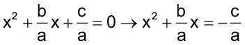
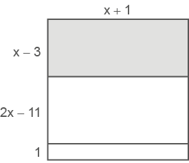
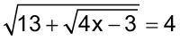

Vista aérea de um condomínio localizado no bairro Recreio dos Bandeirantes.
Rio de Janeiro, RJ, 2014.
Equação do 2.º grau e equação biquadrada
Luca Atalla / Crayon Stock S.A.
Juliano comprou um terreno em um condomínio fechado que possui uma área comum com quadras poliesportivas, piscina e salão de festa. O terreno que ele comprou possui 240 m2. O comprimento do terreno tem 8 metros a mais que a frente.
1. As medidas do terreno que Juliano comprou podem ser de 10 m por 24 m? Por quê?
2. As medidas do terreno podem ser iguais a 12 m e 20 m? Por quê?
3. Com as informações dadas no texto, escreva uma equação que nos permite calcular as medidas deste terreno. O que você observou na equação escrita?
Resolução de equações do 2.o grau completas
Método de completar quadrados
Vamos relembrar como fatorar um trinômio quadrado perfeito. Observe os trinômios quadrados perfeitos a seguir e a sua forma fatorada.
- x2 + 10 x + 25 = (x + 5)2
- x2 - 6x + 9 = (x - 3)2
- x2 + 12x + 36 = (x + 6)2
- x2 - 14x + 49 = (x - 7)2
Podemos representar um trinômio quadrado perfeito geometricamente:
Algumas equações completas do 2.º grau, na sua forma reduzida, apresentam um trinômio quadrado perfeito. Nesses casos, podemos resolver as equações por meio da fatoração. Observe:
x2 + 16x + 64 = 0
(x + 8)2 = 0
(x + 8)(x + 8) = 0
Se um produto é nulo, pelo menos um dos fatores é nulo. Como os dois fatores são iguais, temos:
x + 8 = 0
x = -8
Esta equação apresenta duas raízes iguais, seu conjunto-solução é dado por S = {-8}.
Observe a resolução de outras equações do 2.º grau, na sua forma reduzida, que apresentam um trinômio quadrado perfeito:
Nem sempre uma equação do 2.º grau apresenta um trinômio quadrado perfeito. Veja a equação a seguir:
x2 + 6x - 16 = 0
Vamos representar geometricamente x2 + 6x.
- x2 é a área do quadrado de lado x;
- 6x = 2 ∙ 3x, que corresponde a área de dois retângulos cujos lados medem 3 e x.
Note que para se ter um quadrado perfeito, devemos acrescentar um quadrado de lado 3.
Assim, adicionando-se 9 a x2 + 6x obtemos o trinômio quadrado perfeito x2 + 6x + 9.
Vamos utilizar este raciocínio para resolver a equação x2 + 6x - 16 = 0.
x2 + 6x - 16 = 0
x2 + 6x = 16
a2 + 2ab + b2
- a2 é a área do quadrado de lado a;
- ab é a área do retângulo cujos lados medem a e b;
- b2 é a área do quadrado de lado b.
Podemos adicionar 9 a ambos os membros da equação para que o 1.º membro se torne um trinômio quadrado perfeito.
(x + 3)2 = 25
Agora, vamos determinar as duas raízes da equação.
Para encontrar as raízes da equação x2 + 6x - 16 = 0 utilizamos o método de completar quadrados.
Observe a resolução de outra equação:
25x2 + 10x = 8
25x2 + 10x + 1 = 8 + 1
Adicionamos 1 a ambos os membros para obter um trinômio quadrado perfeito no 1.º membro da igualdade.
Fórmula geral de resolução
Vamos generalizar a ideia de completar quadrados para obter uma fórmula para resolver equações do 2.º grau.
Considere a forma geral da equação do 2.º grau:
ax2 + bx + c = 0
Vamos dividir ambos os membros por a e isolar o termo independente.

Para obtermos um trinômio quadrado perfeito no primeiro membro, vamos adicionar a ambos os membros:
Fatorando o trinômio quadrado perfeito, temos:
Extraindo a raiz quadrada:
Portanto:

Esta fórmula é conhecida como fórmula de Bhaskara e permite calcular as raízes de equações do 2.º grau utilizando os coeficientes a, b e c.
Geralmente a expressão b2 – 4ac é representada pela letra grega Δ (delta), sendo esta denominada de discriminante da equação. Assim temos:
Δ = b2 – 4ac
Vamos resolver algumas equações do 2.º grau utilizando essa fórmula.
Neste caso Δ não é um número real, logo a equação não possui raízes reais.
y2 - 7y + 12 = 0
a = 1, b = -7 e c = 12
Δ = b2 - 4ac
Δ = (-7)2 - 4 ∙ 1 ∙ 12
Δ = 49 - 48
Δ = 1
x2 + 14x + 49 = 0
a = 1, b = 14 e c = 49
Δ = b2 - 4ac
Δ = 142 - 4 ∙ 1 ∙ 49
Δ = 196 - 196
Δ = 0
8x2 - 6x + 5 = 0
a = 8, b = -6 e c = 5
Δ = b2 - 4ac
Δ = (-6)2 - 4 ∙ 8 ∙ 5
Δ = 36 - 160
Δ = -124
- Por meio da fatoração do trinômio quadrado perfeito, calcule as raízes das equações a seguir, no caderno:
- 4x2 + 4x + 1 = 0
- m2 - 16m + 64 = 0
- y2 + 26y + 169 = 0
- 25t2 - 40t + 16 = 0
- Utilizando o método de completar quadrados, determine as raízes das equações:
- x2 + 2x - 3 = 0
- x2 - 4x - 12 = 0
- Resolva as equações a seguir, em seu caderno:
- x2 - 5x + 6 = 0
- x2 + 15x + 50 = 0
- -x2 - 18x - 81 = 0
- x2 + x + 8 = 0
- 3x2 + 24x + 21 = 0
- 6x2 + x + 2 = 0
- x2 - 22x + 121 = 0
- Um terreno retangular de área igual a 216 m2 tem o comprimento excedendo em 6 metros a largura. Quais as dimensões desse terreno?
- Mário tem uma casa na praia que possui o formato quadrado. Agora ele pretende fazer uma varanda, na frente da casa e em uma das laterais, conforme mostra o desenho abaixo. Sabendo que após a construção da varanda a área total da região construída será igual a 156 m2, determine o perímetro da casa antes da construção da varanda.
- No caderno, determine o conjunto-solução das seguintes equações:

- (PUC-SP) Um automobilista faz uma viagem de 660 km, viajando com certa velocidade. Se a sua velocidade tivesse sido de mais 5 km por hora, teria demorado uma hora a menos para percorrer aquela distância. Quanto tempo ele gastou?
- A idade que Juliana terá daqui a 6 anos é igual ao quadrado da idade que tinha há 6 anos. Qual é a idade atual de Juliana?
- (VUNESP-SP) Um quadrado foi dividido em 3 retângulos, conforme a ilustração:

Se a área total desse quadrado é igual a 64 m2, então a área da parte sombreada, em m2, é igual a:
- 50
- 32
- 28
- 15
- 7
- (VUNESP-SP) O proprietário de uma casa em fase final de construção pretende aproveitar 72 m2 de lajotas quadradas que sobraram para fazer uma moldura, com a mesma largura, em volta de uma piscina retangular de 8 m por 6 m, conforme mostra a figura:
Depois de alguns cálculos, o engenheiro responsável concluiu que, se forem utilizados totalmente os 72 m2 de lajotas, a largura da moldura, representada na figura por x, deverá ser de:
- 0,5 m
- 1,0 m
- 1,5 m
- 2,0 m
- 2,5 m
- (Saresp) A área de um tapete retangular cujo comprimento tem 3 m a mais que a largura é de 10 m2.
Sua largura mede, em metros,
- 4
- 3
- 2
- 1
- Determine os valores possíveis para x, sabendo que o retângulo e o triângulo possuem a mesma área.
- Uma tela retangular possui 3 375 cm2 de área. Sabendo que a largura dela possui 30 cm a menos que o seu comprimento, determine suas dimensões.
- Reúna-se com um colega e criem juntos uma situação-problema envolvendo o cálculo de uma ou mais equações do 2.º grau. Em seguida, troquem os cadernos com outra dupla, para que um resolva o problema do outro.
Soma e produto das raízes de uma equação do 2.o grau
Vamos verificar duas relações importantes existentes entre as raízes de uma equação do 2.º grau.
Por meio da fórmula geral, temos que as raízes de uma equação do 2.º grau podem ser calculadas da seguinte forma:
 e
e 
Vamos representar a relação entre a soma (S) das raízes:
Vejamos agora a relação existente entre o produto (P) das raízes:
- Observe as equações a seguir e troque ideias com um colega para descobrir qual é a relação existente entre a soma e o produto das raízes e os coeficientes a, b e c das equações.
- x2 - 9x + 20 = 0
- x2 + 10x + 21 = 0
- x2 - x - 6 = 0
Quando temos a = 1 em uma equação do 2.º grau, podemos escrever:
Dessa forma, a relação da soma e do produto podem nos auxiliar a calcular mentalmente as raízes de uma equação do 2.º grau em que a = 1. Observe:
- Quais são as raízes da equação x2 - 12x + 35 = 0?
Como a = 1, temos que a soma das raízes é igual a 12 e o produto das raízes é igual a 35.
Os números procurados são 5 e 7, pois 5 + 7 = 12 e 5 ∙ 7 = 35.
Logo, as raízes dessa equação são 5 e 7.
Às vezes, não é tão simples calcular mentalmente as raízes de uma equação do 2.º grau. Quando isso ocorre, devemos utilizar a fórmula geral de resolução.
Por meio da relação x2 - Sx + P = 0, também podemos escrever uma equação conhecendo-se as suas raízes. Observe:
- Escreva uma equação em que as raízes são iguais a 7 e 8.
Temos que:
S = x’ + x” = 7 + 8 = 15
P = x’ ∙ x” = 7 ∙ 8 = 56
Substituindo os valores de S e P na relação x2 - Sx + P = 0, temos que a equação procurada é igual a x2 - 15x + 56 = 0.
Veja outro exemplo:
- Escreva uma equação em que as raízes são iguais a -5 e -6.
S = x’ + x” = -5 - 6 = -11
P = x’ ∙ x” = (-5) ∙ (-6) = 30
A equação procurada é x2 + 11x +30 = 0.
- Em seu caderno, escreva uma equação do 2.º grau cujas raízes são:
- -3 e 5
- 2 e 7
- 1 e -4
- -6 e -8
- 1 e 9
-
- Calcule, mentalmente, as raízes das equações e anote as respostas em seu caderno:
- x2 - 6x + 8 = 0
- x2 - 6x - 7 = 0
- x2 + 8x + 15 = 0
- x2 + 7x - 18 = 0
- x2 - 6x + 9 = 0
- x2 - 14x + 45 = 0
- x2 + 8x + 16 = 0
- x2 + 21x + 110 = 0
- Determine o valor de k na equação
3x2 - kx + 18 = 0 para que a soma de suas raízes seja igual a 7.
- Determine o valor de m na equação 25x2 - 20x + m = 0 para que o produto de suas raízes seja igual a .
- Vamos jogar resta um?
Número de participantes: 4 alunos
Como jogar:
- Reproduza as cartas que se encontram nos anexos.
- Embaralhe todas elas.
- Retire uma carta sem que se veja qual é. Essa deve ficar voltada para baixo até o final da partida e não será utilizada.
- Inicie distribuindo as cartas uma a uma entre todos os participantes. Deixe você por último.
- Cada jogador deverá olhar suas cartas e verificar se formam pares. Por exemplo:
- Os pares formados serão baixados sobre a mesa.
- As cartas que sobrarem na mão não deverão ser vistas pelos demais jogadores.
- Ao distribuir as cartas, você ficou com uma a menos. Agora, retire uma (sem saber qual é) do jogador que está a sua esquerda e tente formar um par com ela.
- Se você fizer um par, baixe-o sobre a mesa. Caso contrário, fique com essa carta.
- Em seguida, o próximo jogador retirará uma das cartas do maço que está com você. Se formar um par, este deve ser colocado sobre a mesa.
- O próximo jogador deverá fazer o mesmo, ou seja, escolher uma carta do maço do colega que está a sua esquerda.
- O jogo prossegue desta forma até a partida terminar. Isso ocorrerá quando um dos jogadores ficar com uma carta sem conseguir fazer um par. Ele será o perdedor.
Reinaldo Rosa / Acervo da Editora.
Equações biquadradas
Observe a equação x4 - 13x2 + 36 = 0.
- Troque ideias com um colega e respondam:
- Qual é o grau dessa equação?
- O que vocês observam em relação aos expoentes da incógnita x?
Essa equação recebe um nome especial. Ela é denominada de equação biquadrada.
Vejamos como resolver equações deste tipo.
Para resolver equações biquadradas, devemos substituir x2 por y e x4 por y2, recaindo em uma equação do 2.º grau que já sabemos resolver.
y2 - 13y + 36 = 0
Δ = b2 - 4ac = 169 - 144 = 25
Agora, vamos determinar os valores de x, pois x2 = y.
Portanto, as raízes da equação são -3, -2, 2 e 3. Representamos o conjunto-solução por S = {-3, -2, 2, 3}.
Observe a resolução de outra equação biquadrada.
Vamos substituir x2 por y e x4 por y2, recaindo em uma equação do 2.º grau.
y2 - 81y = 0
y(y - 81) = 0
y’ = 0 ou
y - 81 = 0
y” = 81
Determinando os valores de x:
- Para y = 0, temos x = 0.
- Para y = 81, temos:
x2 = 81
x = ±9
As raízes desta equação são 0, -9 e 9. O conjunto-solução é dado por
S = {0, -9, 9}.
Equações biquadradas e
equações irracionais
Equações irracionais
Vamos resolver a equação .
Note que nessa equação há uma incógnita no radicando. Equações deste tipo são denominadas equações irracionais.
Acompanhe agora como resolver equações irracionais.
Vamos elevar ao quadrado ambos os membros da equação.
Assim:
x2 - 2x + 1 = x + 11
x2 - 2x - x + 1 - 11 = 0
x2 - 3x - 10 = 0
Δ = b2 - 4ac = 9 + 40 = 49
Após encontrarmos as raízes, precisamos verificar se essas raízes satisfazem a equação irracional, pois nem sempre isso acontece.
Verificação:
Veja que -2 não verifica a igualdade para a equação, nesse caso somente 5 é a raiz da equação irracional . Seu conjunto-solução é dado por S = {5}.
Vejamos a resolução de outras equações irracionais:
Vamos elevar ao quadrado ambos os membros da equação.
- Em seu caderno, resolva as equações biquadradas a seguir:
- x4 - 26x2 + 25 = 0
- x4 - 49x2 = 0
- x4 - 9x2 + 36 = 0
- 3x4 - 10x2 - 8 = 0
- x4 + 16 = 169x2 + 16
- x4 + 4x2 + 8 = 0
“Um dado importante sobre educação é o percentual de pessoas alfabetizadas. No Brasil, segundo a Pesquisa Nacional por Amostra de Domicílios Contínua (PNAD Contínua) 2019, a taxa de analfabetismo das pessoas de 15 anos ou mais de idade foi estimada em 6,6% (11 milhões de analfabetos).
A taxa de 2018 havia sido 6,8%. Esta redução de 0,2 pontos percentuais no número de analfabetos do país, corresponde a uma queda de pouco mais de 200 mil pessoas analfabetas em 2019.
[...] O acesso à Educação de qualidade é direito fundamental para o desenvolvimento da cidadania e ampliação da democracia. Os investimentos públicos em educação são de extrema importância para a redução da pobreza, criminalidade e ampliação do crescimento econômico, bem-estar e acesso aos direitos fundamentais pela população.”
Fonte: IBGE. Conheça o Brasil — população — educação. Disponível em: https://cutt.ly/TLsrcbd. Acesso em: 03 jun. 2022.
Vamos elevar ao quadrado ambos os membros da equação.

- Determine o conjunto-solução das seguintes equações:
- (UTFPR) O conjunto-solução S da equação , é:
- S = { 6 }.
- S = { 1, 6 }.
- S = { 3 }.
- S = Ø.
- S = { 4 }.
Probabilidade e estatística
- Unidades de medida utilizadas na informática
Em uma pesquisa censitária, investigamos todos os indivíduos (pessoas, peixes, plantas, etc.) de uma população de interesse (total de peixes, população de um país, bioma, etc.). Nas pesquisas amostrais, apenas uma parte da população de interesse é investigada, ou seja, a amostra é um subconjunto.
Há necessidade de que a amostra escolhida seja bem definida para que possa representar o que ocorre com a população, por isso ela é tão importante.
No Brasil, são feitas pesquisas contínuas para se entender o cenário nacional. A PNAD é o programa de pesquisa sobre a população brasileira utilizado pelo IBGE.
- Reúna-se com seu colega e observem o gráfico, a seguir:
Agora, respondam em seus cadernos:
- De acordo com o gráfico, a quantidade de pessoas sem instrução aumentou ou diminuiu?
- Na opinião de vocês, qual é a importância do aumento de anos de estudo para a vida de uma pessoa?
- Observando o gráfico, quais são os níveis de instrução que diminuíram em 2021 ao comparar com 2020?
- Na opinião de vocês, essa pesquisa foi realizada com uma amostra ou com a população do fenômeno que está sendo estudado?
- Qual outro tipo de gráfico você usaria para representar essas informações. Reproduza-o em seu caderno.
A Pesquisa Nacional por Amostra de Domicílios Contínua (PNAD Contínua) é uma pesquisa por amostra probabilística de domicílios, de abrangência nacional, planejada para atender a diversos propósitos. Visa acompanhar as flutuações trimestrais e a evolução, no curto, médio e longo prazo, da força de trabalho e outras informações necessárias para o estudo do desenvolvimento socioeconômico do país. Para atender a tais objetivos, a pesquisa foi planejada para produzir indicadores trimestrais sobre a força de trabalho e indicadores anuais sobre temas suplementares permanentes (como trabalho e outras formas de trabalho, cuidados de pessoas e afazeres domésticos, tecnologia da informação e da comunicação, etc.), investigados em um trimestre específico ou aplicados em uma parte da amostra a cada trimestre e acumulados para gerar resultados anuais, sendo produzidos, também, com periodicidade variável, indicadores sobre outros temas suplementares. Tem como unidade de investigação o domicílio.
A PNAD Contínua foi implantada, experimentalmente, em outubro de 2011 e, a partir de janeiro de 2012, em caráter definitivo, em todo o Território Nacional. Sua amostra foi planejada de modo a produzir resultados para o Brasil, Grandes Regiões, Unidades da Federação, Regiões Metropolitanas que contêm Municípios das Capitais, Região Integrada de Desenvolvimento (RIDE) Grande Teresina, e Municípios das Capitais. Desde sua implantação, a pesquisa, gradualmente, vem ampliando os indicadores investigados e divulgados.
Periodicidade de divulgação das informações:
- Mensal — conjunto restrito de indicadores relacionados à força de trabalho e somente para o nível geográfico de Brasil;
- Trimestral — conjunto de indicadores relacionados à força de trabalho para todos os níveis de divulgação da pesquisa;
- Anual — demais temas permanentes da pesquisa e indicadores complementares à força de trabalho;
- Variável — outros temas ou tópicos dos temas permanentes a serem pesquisados com maior periodicidade ou ocasionalmente.
Os indicadores mensais utilizam as informações dos últimos três meses consecutivos da pesquisa, existindo, entre um trimestre móvel e o seguinte, repetição das informações de dois meses. Assim, os indicadores da PNAD Contínua produzidos mensalmente não refletem a situação de cada mês, mas, sim, a situação do trimestre móvel que finaliza a cada mês.
Os resultados anuais sobre outros temas ou tópicos são obtidos acumulando-se informações de determinada visita ao longo do ano, ou são concentrados em determinado trimestre.
Fonte: IBGE. Pesquisa Nacional por Amostra de Domicílios Contínua. Disponível em: https://www.ibge.gov.br/estatisticas/sociais/habitacao/17270-pnad-continua.html. Acesso em: 03 jun. 2022.
- (Caxias do Sul-RS) Se uma das raízes da equação 2x2 - 3px + 40 = 0 é 8, então o valor de p é:
a) 5 d) -5
b) e) -7
c) 7
- (UFAM) Quais os valores de b e c para que a equação x2 + bx + c = 0 tenha como raízes 5 e -3?
- -2 e -15
- 5 e -3
- 15 e 3
- -5 e 3
- n.d.a.
- (FUVEST-SP) A equação
ax2 - 4x - 16 = 0 tem uma raiz cujo valor é 4. A outra raiz é:- 1
- 2
- -1
- -2
- n.d.a.
- (FGV-SP) Com relação à equação , podemos afirmar que o conjunto-solução é:
a) {3, -1} d) {1}
b) {-3} e) 
c) {-1, 3}
- A superfície ocupada pela área da piscina da casa de Bruno tem 10 m de largura por 12 m de comprimento. Ao redor da piscina ele pretende construir uma calçada de mesma largura e revesti-la com pedras, conforme a figura abaixo.
Determine a largura da calçada, sabendo que a área total, ou seja, a área ocupada pela piscina mais a área ocupada pela calçada, será igual a 288 m2.
- (Santa Maria-RS) A soma e o produto das raízes da equação 2x2 - 7x + 6 = 0, respectivamente, são:
- -7 e 6
-
- 7 e -6
- (CESCEM-SP) O produto das raízes da equação é:
- 6
- 5
- 1
- -1
- -6
- (FGV-SP) A equação tem:
- uma única raiz;
- infinitas raízes;
- exatamente duas raízes;
- conjunto-solução vazio.
- (FAAP-SP) O conjunto-solução da equação q4 - 13q2 + 36 = 0 é:
- {2, 3}
- {0, 2, 3}
- {-3, -2}
- {-3, -2, 2, 3}
- n.d.a.
- (PUC-SP) A solução da equação é:
- 1
- 2
- 3
- 7
- n.d.a.
- Em seu caderno, resolva as equações a seguir.
- ,
sendo x ≠ -1 - ,
sendo y ≠ 1 e y ≠ -1 - ,
sendo m ≠ 2 - ,
sendo x ≠ 1 e x ≠ -1
- (Saresp) Quais são as raízes da equação x2 + 10x + 16 = 0?
- 2 e 8
- -2 e -8
- 5 e -5
- -16 e -4
- (Unifor) Uma das soluções da equação é um número inteiro múltiplo de:
- 2
- 3
- 4
- 5
- 11
- As raízes da equação 1, 2x2 + 0,1x = 0,6 são:
-

- Determine o conjunto solução das seguintes equações:
- 
- (UF-PA) A solução da equação é um número:
- múltiplo de 5;
- divisor de 2;
- múltiplo de 3;
- primo;
- múltiplo de 12.
- Quais são as raízes da equação
x2 + 12x + 35 = 0?- 7 e 5
- -7 e 5
- 7 e -5
- -5 e -7
- Em seu caderno, resolva as equações biquadradas a seguir:
- x4 - 144 = 0
- x4 - 64x2 = 0
- x4 - 26x2 + 25 = 0
- (Saresp) Em uma sala deve-se colocar um tapete de medidas 2 m x 3 m, de modo que se mantenha a mesma distância em relação às paredes, como indicado no desenho abaixo:
Sabendo que a área dessa sala é 12 m2, o valor de x será:
- 0,5 m
- 0,75 m
- 0,80 m
- 0,05 m
- (UFRR) A equação do 2.º grau que tem como uma das raízes e o produto igual a 1 é:
- x2 - x + 4 = 0
- x2 + 4x + 1 = 0
- x2 - 4x - 1 = 0
- x2 + 4x - 1 = 0
- x2 - 4x + 1 = 0
Distribuição percentual das pessoas de 14 anos ou mais de idade, por nível de instrução – Brasil – 4° trimestre de 2000/ 1° trimestre de 2021
Superior completo
Superior incompleto
Médio completo
Médio incompleto
Fundamental completo
Fundamental incompleto
Sem instrução